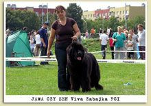
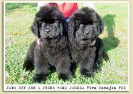
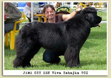
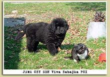

Nowofundland Viva Zabajka FCI
Strona hodowli psów rasy Nowofundland Viva Zabajka FCI. Znajdziesz tu informacje o mojej hodowli, szczeniętach,
planowanych miotach, wystawach psów rasowych oraz galerię zdjęć.



